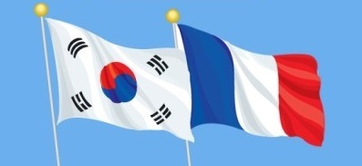

FRANCE HISTORY
프랑스 역사
‘내 사전에 불가능이란 없다.’ 나폴레옹은 이 말로 잘 설명된다. 그는 프랑스령의 외딴 섬 코르시카 출신으로 가난과 설움 속에서 군사학교를 졸업하고 뛰어난 능력으로 프랑스 구국의 영웅이 되었다. 30대 초반에 프랑스 황제로 등극해 유럽의 절반을 제패하고, 교육, 종교, 문화, 법률 등 오늘날 프랑스의 초석을 남긴 인물이다. 지난 세기 프랑스 위인열전에서 항상 1등의 자리를 고수한(그도 결국 20세기 드골에게 선두 자리를 내 준다.) 위대한 인물이다.
한국과 프랑스
한국과 프랑스의 첫 교류
18세기 중국에 파견된 프랑스 선교사들은 한국에 대한 지식을 처음으로 프랑스에 알렸다. 이후 19세기 초 프랑스가 가톨릭 선교사를 한국에 파견하여 활발한 선교활동을 전개함에 따라 한국과 프랑스는 민간 차원의 교류를 시작하게 되었다. 학계 자료에 따르면, 1836년 1월 육로를 통해 중국에서 조선으로 입국한 프랑스의 피에르 필리베르 모방(Pierre Philibert Maubant) 신부가 서양인으로서는 최초로 조선에 들어왔다는 것이 정설로 통했다. 그러나 이보다 90년이나 앞선 1747년 2월 프랑스 선교사 델라포르테(Delaporte)가 조선을 여행한 기록이 발견되어 사실 여부를 확인 중에 있다. 모방 신부에 이어 자크 오노레 샤스탕(Jacques Honoré Chastan), 로랑 조제프 마리위스 앵베르(Laurent Joseph Marius Imbert) 등 파리 외방전교회1) 소속 신부가 각각 1835년, 1836년, 1837년에 조선에 입국하였고, 1839년 기해사옥(己亥邪獄)때 모두 순교하였다.